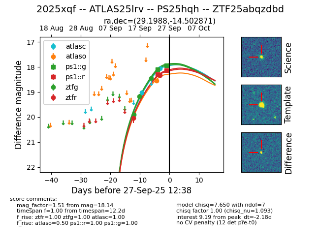
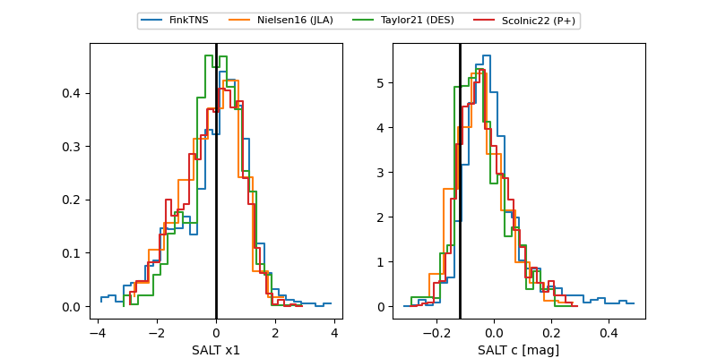

FINK: ZTF25abqzdbd
Lasair: ZTF25abqzdbd
ALeRCE: ZTF25abqzdbd
TNS: 2025xqf
YSE: 2025xqf
ZTF25abqzdbd (ztf,fink)
2025xqf (tns,yse)
ATLAS25lrv (atlas)
PS25hqh (panstarrs)
equatorial (ra, dec) = (29.1988,-14.50287)
galactic (l, b) = (176.5396,-70.22370)


last atlasc=18.06, atlaso=18.54, ps1::g=17.94, ps1::r=18.14, ztfg=18.46, ztfr=18.33
2 atlasc, 1 atlaso, 2 ps1::g, 2 ps1::r, 3 ztfg, 2 ztfr detections